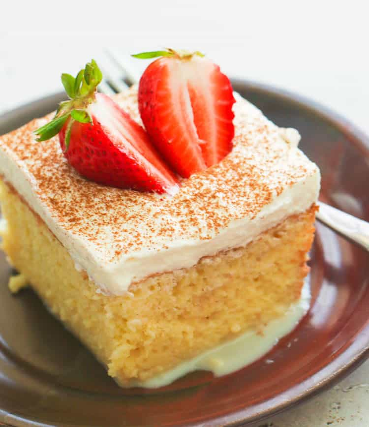

Tres Leches Cake Recipe

Tres leches literally means, "three milks" and Tres Leches Cake
is an ultra light sponge cake soaked in a sweet milk mixture.
It's popular in Mexico and Latin America and throughout the
United States as its often available in Mexican restaurants.
The cake is similar to an angel food cake.
In its entirety this recipe will take approximately 2 hours and 30
minutes to complete. 25 minutes of prep time, 45 minutes of cook time
and an additional 1 hour and 20 minutes. This recipe also yields
around 8 servings.
Ingredients
- sugar
- cinnamon sugar
- 5 eggs
- milk
- vanilla extract
- all purpose flour
- baking powder
- sweetened condense milk
- evaporated milk
- whipping cream
- strawberries or cherries
Steps
- Preheat oven to 350 degrees F (175 degrees C). Butter and flour
bottom of a 9-inch springform pan.Preheat oven to 350 degrees F
(175 degrees C). Butter and flour bottom of a 9-inch springform pan.
- Beat the egg yolks with 3/4 cup sugar until light in color and
doubled in volume.
- Stir in milk, vanilla, flour and baking powder.
- In a small bowl, beat egg whites until soft peaks form.
- Gradually add remaining 1/4 cup sugar.Gradually add remaining
1/4 cup sugar. Beat until firm but not dry.Beat until firm but
not dry.
- Fold 1/3 of the egg whites into the yolk mixture to lighten it;
fold in remaining egg whites. Pour batter into prepared pan.
- Bake in preheated oven for 45 to 50 minutes or until cake tester
inserted into the middle comes out clean. Allow to cool 10 minutes.
- Mix together condensed milk, evaporated milk and 1/4 cup of the
whipping cream.
- Set aside 1 cup of the measured milk mixture and refrigerate for
another use. Pour remaining milk mixture over cake slowly until
absorbed.
- Whip the remaining whipping cream until it thickens and reaches
spreading consistency.
- Frost cake with whipped cream, cinnamon sugar and garnishes.
Store cake in the refrigerator and enjoy!